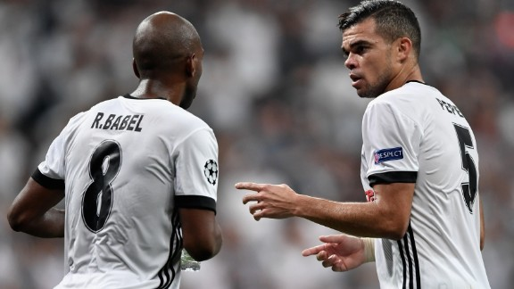

Babel weer belangrijk voor Besiktas: ’Ik ben nu een completere speler’
« Vorige  Volgende »Besiktas won dinsdagavond ook de tweede groepswedstrijd in de Champions League. RB Leipzig werd met 2-0 verslagen en Ryan Babel eiste een hoofdrol op door de 1-0 te scoren. De Nederlander is tevreden hoe hij er zelf momenteel op staat
In de eerste wedstrijd werd FC Porto al met 1-3 verslagen en daardoor gaat de regerend Turks landskampioen aan kop in Groep G. “We wisten dat we een grote stap konden zetten. We hebben goed gespeeld”, vertelt Babel op de clubwebsite van Besiktas. “Het vertrouwen is groot bij ons. Besiktas is een grote club, we staan er goed voor. We kunnen omgaan met het lastige programma.”
De dertigjarige aanvaller scoorde zijn vijfde doelpunt van het seizoen. “Het is altijd fijn om te scoren. Met links, niet mijn sterkste voet, maar de bal ging er lekker in.” Babel ziet dat hij in de loop van zijn carrière is veranderd als voetballer. "Er is een groot verschil als je kijkt naar de prestaties in het begin van mijn carrière. Ik ben nu een completere speler, vooral door mijn ervaring in Duitsland en bij Liverpool. Dat gebruik ik om het team te helpen."